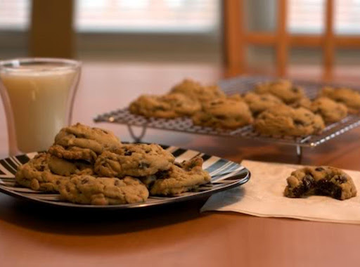

Grandma's Cookies
Grandma's cookies are cookies made by SpongeBob's grandmother, Grandma SquarePants. They are a dessert that SpongeBob and Patrick like to eat, especially the former.
Ingredients
- 1 cup butter, softened
- 1 cup packed brown sugar
- 3/4 cup sugar
- 2 large eggs, room temperature
- 1-1/2 teaspoons vanilla extract
- 2-2/3 cups all-purpose flour
- 1-1/4 teaspoons baking soda
- 1 teaspoon salt
- 1 package (12 ounces) semisweet chocolate chips
- 2 cups coarsely chopped walnuts, toasted
Steps
- In a large bowl, beat butter and sugars until blended. Beat in eggs and vanilla. In a small bowl, whisk flour, baking soda and salt; gradually beat into butter mixture. Stir in chocolate chips and walnuts.
- Shape 1/4 cupfuls of dough into balls. Flatten each to 3/4-in. thickness (2-1/2-in. diameter), smoothing edges as necessary. Place in an airtight container, separating layers with waxed paper or parchment; refrigerate, covered, overnight.
- To bake, place dough portions 2 in. apart on parchment-lined baking sheets; let stand at room temperature 30 minutes before baking. Preheat oven to 400°.
- Bake until edges are golden brown (centers will be light), 10-12 minutes. Cool on pans 2 minutes. Remove to wire racks to cool.